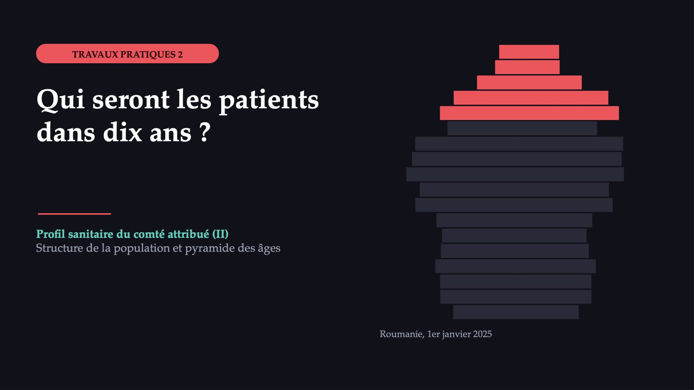
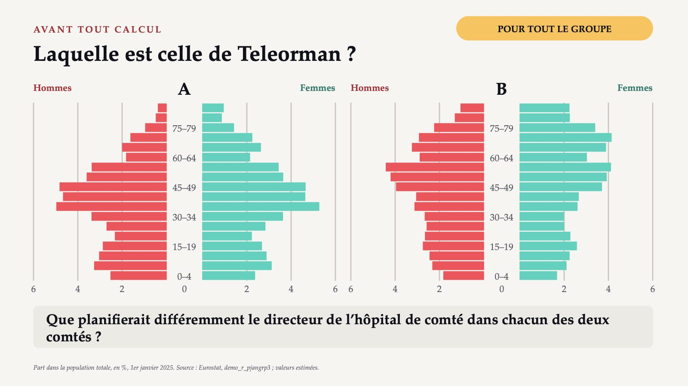
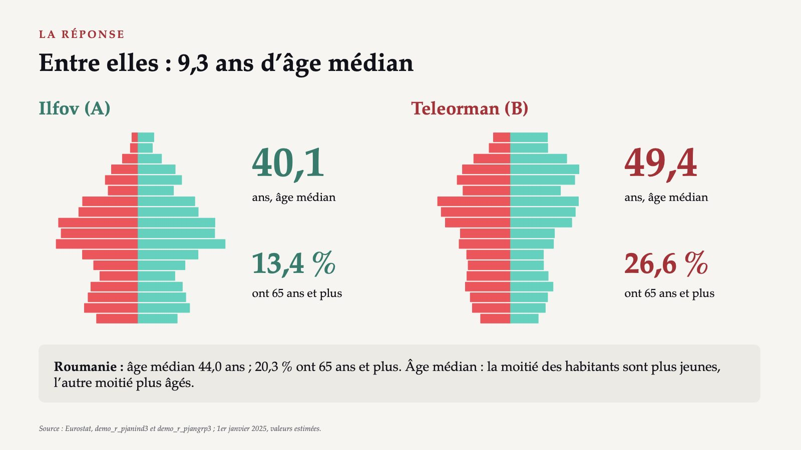
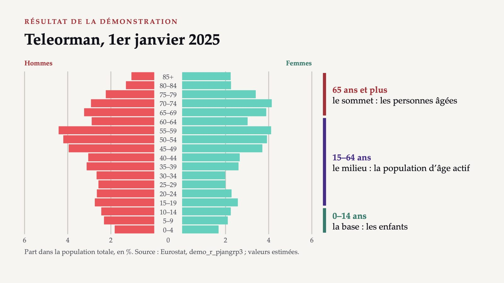
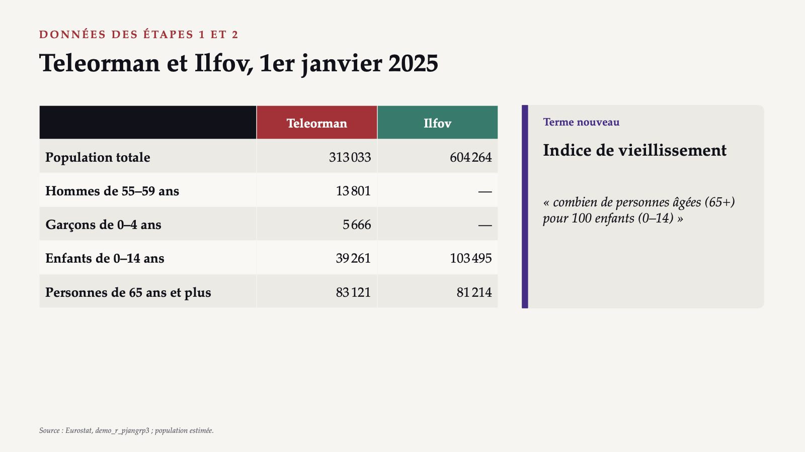
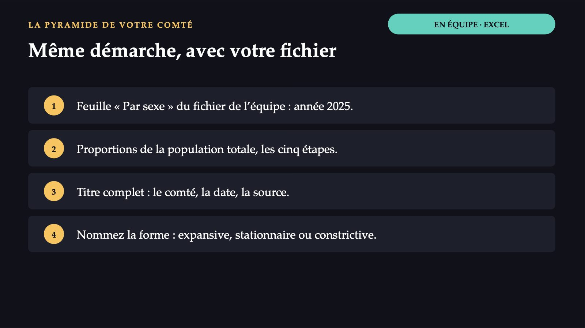

Qui seront les patients dans dix ans ?

1 / 15Laquelle est celle de Teleorman ?

2 / 1540,1

3 / 15La pyramide en cinq étapes
![DÉMONSTRATION DANS EXCEL La pyramide en cinq étapes 1 Copiez la population de 2025 : les hommes et les femmes, par groupe d’âge, du plus jeune au plus âgé. 2 Calculez la proportion de chaque cellule : population de la cellule ÷ population totale × 100. 3 Inscrivez les proportions des hommes avec le signe moins. 4 Insérez un graphique à barres horizontales groupées. 5 Superposition 100 %, écartement 0 entre les barres, format « 0;0 » sur l’axe horizontal. Feuille « Par sexe » du fichier de l’équipe. À l’écran, avec le fichier de Teleorman.](diapozitive/LP02/004.jpg) 4 / 15
4 / 15Teleorman, 1er janvier 2025

5 / 15Comment lire la forme d’une pyramide
 6 / 15
6 / 15Critère de travail : comparez la longueur des barres de la base, du milieu et du haut.
Trois vérifications
![AVANT TOUTE COMPARAISON Trois vérifications 1 Quelle population ? L’adresse de la carte d’identité ou le lieu où la personne vit réellement. Le profil se fait sur une seule base : la résidence habituelle. 2 La même définition sur toute la série ? Après le recensement de 2021, à Teleorman les personnes de 90 ans et plus passent de 4 055 à 2 512, sans explication. 3 La dernière année et ses indicateurs de statut ? La population de 2025 porte le code « e » : estimée, donc révisable. Notez la date du téléchargement.](diapozitive/LP02/007.jpg) 7 / 15
7 / 15L’exercice commun, en quatre étapes
8 / 15Teleorman et Ilfov, 1er janvier 2025

9 / 15Dépendance et natalité
![DONNÉES DES ÉTAPES 3 ET 4 Dépendance et natalité Étape 3, Teleorman Personnes 0–14 ans · 39 261 15–64 ans · 190 651 65+ · 83 121 Roumanie, rapport de dépendance · 55,6 Étape 4, 2024 Teleorman · Ilfov Naissances vivantes · 1 749 · 4 253 Population moyenne · 314 257,5 · 593 963,5 Fécondité · 1,27 · 1,09 Rapport de dépendance : « combien d’enfants et de personnes âgées pour 100 personnes de 15–64 ans » Indice synthétique de fécondité : « combien d’enfants aurait une femme, aux taux de fécondité par âge d’aujourd’hui » Source : Eurostat ; valeurs estimées.](diapozitive/LP02/010.jpg) 10 / 15
10 / 15Même démarche, avec votre fichier

11 / 154,41 % · 1,81 %
![RÉSULTATS · EXERCICE COMMUN Les quatre étapes, résolues 1 · Pyramide Teleorman 4,41 % · 1,81 % Teleorman : constrictive. Ilfov : excédent de 35–49 ans dû aux arrivées (28,9 % contre 21,8 %). 2 · Vieillissement Teleorman · Ilfov 211,7 · 78,5 Teleorman : 212 personnes âgées pour 100 enfants. 3 · Dépendance Teleorman 64,2 · 43,6 L’écart avec le pays vient des personnes âgées. 4 · Natalité Teleorman · Ilfov 5,57 · 7,16 Pour 1 000 habitants, en 2024. Source : Eurostat, demo_r_pjangrp3 et demo_r_gind3 ; calcul tiré des notes de la séance.](diapozitive/LP02/012.jpg) 12 / 15
12 / 15La mortalité n’ajoute pas de personnes à un âge donné ; la fécondité d’Ilfov est la plus faible, donc les naissances n’expliquent pas non plus la forme.
Natalité plus élevée, fécondité plus faible
![RÉSULTATS · ÉTAPE 4 Natalité plus élevée, fécondité plus faible Taux de natalité pour 1 000 habitants, 2024 7,2 Ilfov 5,6 Teleorman Indice synthétique de fécondité enfants par femme, 2024 1,09 Ilfov 1,27 Teleorman Pourquoi ? Les femmes de 15–49 ans représentent 25,9 % de la population d’Ilfov et 17,7 % de celle de Teleorman. Le taux de natalité rapporte les naissances à toute la population ; l’indice synthétique de fécondité ne dépend pas du nombre de femmes à chaque âge. Source : Eurostat, demo_r_gind3 et demo_r_find3 ; valeurs estimées.](diapozitive/LP02/013.jpg) 13 / 15
13 / 15Le chapitre démographique de votre comté
![À LA MAISON, DANS LES DEUX JOURS Le chapitre démographique de votre comté Synthèse, à tour de rôle : quel indicateur mettriez-vous en première page du profil et quel service en découle-t-il ? 1 Les pyramides de 2025 et de 2019, avec la réserve du saut de série de 2021–2022. 2 L’indice de vieillissement et les rapports de dépendance et de féminité, comparés au pays. 3 Dans Eurostat : taux de natalité, indice synthétique de fécondité, accroissement naturel, solde migratoire (2024). 4 Un constat et une conséquence pour les services en 2030–2040. 5 Facultatif : projection EUROPOP2019 pour le comté (2025, 2040), avec la réserve d’une base de 2019. Individuellement, dans le formulaire du travail à la maison, avec le fichier Excel.](diapozitive/LP02/014.jpg) 14 / 15
14 / 15Trois questions pour finir
15 / 15Flèches ou espace : navigation · O : vue d’ensemble · N : notes de l’intervenant · F : plein écran · Échap : fermer